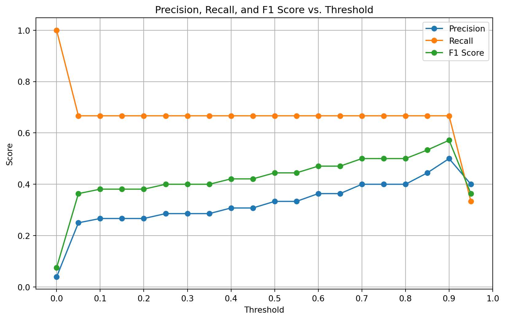
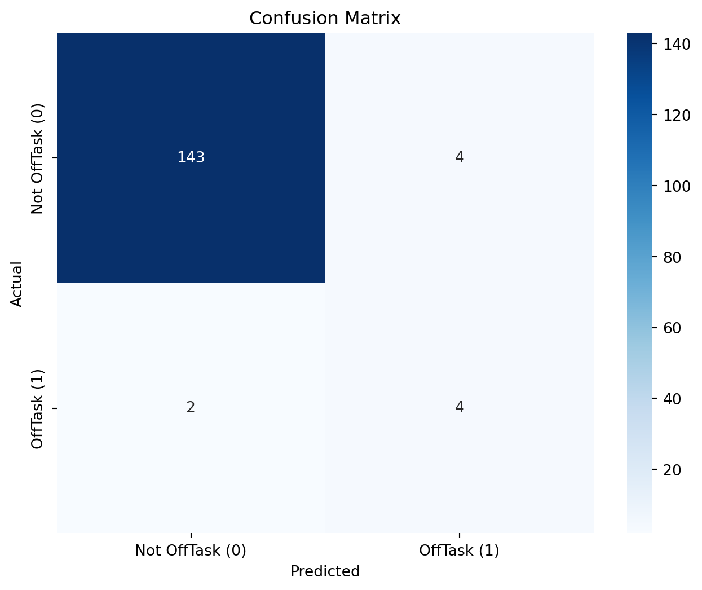

# Import libraries
import pandas as pd
from sklearn.model_selection import train_test_split, cross_val_score, GridSearchCV
from sklearn.ensemble import RandomForestClassifier, GradientBoostingClassifier
from sklearn.metrics import classification_report, cohen_kappa_score, precision_recall_curve, classification_report, confusion_matrix
from imblearn.over_sampling import SMOTE
from xgboost import XGBClassifier
import numpy as np
import matplotlib.pyplot as plt
import seaborn as snsAnalyzing and Optimizing Machine Learning Models for Off-Task Behavior Detection
A machine learning model to detect off-task behavior
Introduction:
In the field of educational data mining, detecting off-task behavior is crucial for understanding student engagement and improving learning outcomes. This paper presents an in-depth analysis of machine learning models designed to classify off-task behavior in educational settings. We explore the challenges of working with imbalanced datasets and evaluate the performance of various classifiers, including Random Forest, XGBoost, and Gradient Boosting. Through a series of experiments and analyses, we aim to optimize model performance and provide insights into the complexities of behavior detection in educational contexts.
Methodology:
Our study employed a multi-step approach to develop and evaluate machine learning models:
- Data Preparation: We utilized a dataset containing features related to student behavior, with a binary target variable indicating off-task status (OffTask: Y/N).
- Model Selection: We implemented three main classifiers: Random Forest, XGBoost, and Gradient Boosting.
- Handling Class Imbalance: To address the imbalanced nature of the dataset, we applied the Synthetic Minority Over-sampling Technique (SMOTE).
- Hyperparameter Tuning: We used GridSearchCV to optimize model parameters, focusing on maximizing the F1-score.
- Threshold Optimization: We explored various decision thresholds to balance precision and recall, particularly for the minority class (off-task behavior).
- Performance Evaluation: We assessed model performance using metrics such as Cohen’s Kappa score, precision, recall, F1-score, and confusion matrices.
- Cross-Validation: We employed k-fold cross-validation to ensure robust performance estimates across different data subsets.
This code snippet is focused on training a machine learning model to classify whether a task is “OffTask” (a binary outcome). Let’s break it down step by step:
- Importing Libraries
- pandas: Used for data manipulation.
- train_test_split: Used to split the dataset into training and testing sets.
- GridSearchCV: Helps in finding the optimal hyperparameters for the model.
- RandomForestClassifier: A decision-tree-based classifier that combines many trees to improve performance.
- SMOTE: Synthetic Minority Over-sampling Technique, used to handle class imbalance in the training data.
- classification_report: Used to generate a detailed report on model performance metrics.
# Load the dataset
2data = pd.read_csv('data/ca1-dataset.csv')- 2
- Loading the Dataset
- Loads the dataset from the CSV file.
# Prepare the data
data['OffTask'] = data['OffTask'].map({'N': 0, 'Y': 1}) # Encode target variable
X = data.drop(columns=['Unique-id', 'namea', 'OffTask']) # Features
y = data['OffTask'] # Target variable- Preparing the Data
- The target variable OffTask is encoded, converting ‘N’ (No) to 0 and ‘Y’ (Yes) to 1.
- X is set as the feature set by dropping irrelevant columns (‘Unique-id’, ‘namea’, ‘OffTask’).
- y is the target variable, which is the encoded OffTask column.
# Split the data into training and testing sets
X_train, X_test, y_train, y_test = train_test_split(X, y, test_size=0.2, random_state=42)- Splitting Data
- The dataset is split into training (80%) and testing sets (20%).
# Apply SMOTE to the training data
smote = SMOTE(random_state=42)
X_train_resampled, y_train_resampled = smote.fit_resample(X_train, y_train)- Handling Imbalanced Data with SMOTE
- SMOTE is applied to balance the classes in the training data. It creates synthetic samples for the minority class (OffTask == 1).
- X_train_resampled and y_train_resampled contain the balanced training data.
# Calculate the ratio of classes
class_0_count = sum(y_train_resampled == 0)
class_1_count = sum(y_train_resampled == 1)
ratio_of_classes = class_0_count / class_1_count- Class Distribution Check
- Counts the number of instances in each class after resampling, to calculate the class ratio (0 = not off-task, 1 = off-task).
# Define the model
model = RandomForestClassifier(random_state=42, class_weight='balanced')- Defining the Model
- A RandomForest model is instantiated. The class_weight=‘balanced’ argument is used to adjust weights inversely proportional to class frequencies.
# Define the parameter grid
param_grid = {
'n_estimators': [50, 100, 200],
'max_depth': [None, 10, 20, 30],
'min_samples_split': [2, 5, 10],
'min_samples_leaf': [1, 2, 4]
}- Setting Up Hyperparameter Tuning (GridSearchCV)
- Defines the parameter grid for GridSearchCV to find the optimal combination of hyperparameters:
- n_estimators: Number of trees.
- max_depth: Maximum depth of trees.
- min_samples_split: Minimum samples required to split a node.
- min_samples_leaf: Minimum number of samples required in a leaf node.
# Set up GridSearchCV
grid_search = GridSearchCV(estimator=model, param_grid=param_grid,
scoring='f1', cv=5, n_jobs=-1, verbose=2)- GridSearchCV for Hyperparameter Tuning
- GridSearchCV is initialized with:
- model: The RandomForest classifier.
- param_grid: The defined hyperparameter grid.
- scoring=‘f1’: Uses the F1 score as the evaluation metric.
- cv=5: Performs 5-fold cross-validation.
- n_jobs=-1: Utilizes all available CPU cores.
- verbose=2: Provides detailed output.
# Fit GridSearchCV
grid_search.fit(X_train_resampled, y_train_resampled)Fitting 5 folds for each of 108 candidates, totalling 540 fitsGridSearchCV(cv=5,
estimator=RandomForestClassifier(class_weight='balanced',
random_state=42),
n_jobs=-1,
param_grid={'max_depth': [None, 10, 20, 30],
'min_samples_leaf': [1, 2, 4],
'min_samples_split': [2, 5, 10],
'n_estimators': [50, 100, 200]},
scoring='f1', verbose=2)In a Jupyter environment, please rerun this cell to show the HTML representation or trust the notebook. On GitHub, the HTML representation is unable to render, please try loading this page with nbviewer.org.
GridSearchCV(cv=5,
estimator=RandomForestClassifier(class_weight='balanced',
random_state=42),
n_jobs=-1,
param_grid={'max_depth': [None, 10, 20, 30],
'min_samples_leaf': [1, 2, 4],
'min_samples_split': [2, 5, 10],
'n_estimators': [50, 100, 200]},
scoring='f1', verbose=2)RandomForestClassifier(class_weight='balanced', max_depth=20, n_estimators=50,
random_state=42)RandomForestClassifier(class_weight='balanced', max_depth=20, n_estimators=50,
random_state=42)- Fitting the Model
- Fits the GridSearchCV on the resampled training data to find the best hyperparameters.
# Best parameters
11print("Best parameters found: ", grid_search.best_params_)- 11
- Output Best Parameters
Best parameters found: {'max_depth': 20, 'min_samples_leaf': 1, 'min_samples_split': 2, 'n_estimators': 50}The best hyperparameters found for the RandomForestClassifier are:
- max_depth = 20: The trees can grow to a depth of 20, allowing the model to capture more complexity in the data while preventing overfitting beyond that depth.
- min_samples_leaf = 1: A leaf node will have at least one sample, allowing for more detailed splits.
- min_samples_split = 2: A node will split if it has at least two samples, which is the default and provides the most flexibility for splitting.
- n_estimators = 50: The model will use 50 trees in the forest, balancing computational cost and performance.
This setup likely balances the need for depth and leaf size with computational efficiency. If you want to further evaluate or adjust performance, you could test this configuration against other models or datasets.
In this code snippet, the model is being trained on resampled data, then evaluated on the test set using metrics like Cohen’s Kappa score and a classification report. Let’s go through it step by step:
# Train the model on the resampled data
1model.fit(X_train_resampled, y_train_resampled)- 1
- Train the Model
RandomForestClassifier(class_weight='balanced', random_state=42)In a Jupyter environment, please rerun this cell to show the HTML representation or trust the notebook.
On GitHub, the HTML representation is unable to render, please try loading this page with nbviewer.org.
RandomForestClassifier(class_weight='balanced', random_state=42)
- This line trains the RandomForestClassifier (from the previous step) on the resampled training data (X_train_resampled and y_train_resampled).
- The model will learn the relationships between the features in X_train_resampled and the target y_train_resampled (which includes synthetic samples from SMOTE).
# Make predictions on the test set
2y_pred = model.predict(X_test)- 2
- Make Predictions
- After training, the model is used to predict the target labels for the test data (X_test), which was not resampled.
- The predicted labels (y_pred) are compared with the actual labels (y_test) to evaluate performance.
# Evaluate the model
3kappa = cohen_kappa_score(y_test, y_pred)
print("Kappa Score (RandomForest):", kappa)- 3
- Evaluate the Model with Cohen’s Kappa Score
Kappa Score (RandomForest): 0.40175953079178883- Cohen’s Kappa score is a statistic that measures inter-rater agreement for categorical items. It adjusts for the possibility that agreement occurs by chance. A Kappa score close to 1 means high agreement, while a score near 0 indicates little agreement beyond chance.
- In this case, it evaluates how well the model’s predictions (y_pred) agree with the true labels (y_test).
A Cohen’s Kappa Score of 0.4018 suggests a moderate level of agreement between the model’s predictions and the true labels on the test set. Here’s what this means:
- Interpretation of Kappa Score:
- A score of 1 would indicate perfect agreement (i.e., the model’s predictions exactly match the true labels).
- A score of 0 would indicate that the agreement is no better than random guessing.
- 0.40–0.59 typically suggests moderate agreement. So, while your model is better than random, there is still room for improvement.
4print(classification_report(y_test, y_pred))- 4
- Classification Report
precision recall f1-score support
0 0.98 0.97 0.97 147
1 0.38 0.50 0.43 6
accuracy 0.95 153
macro avg 0.68 0.73 0.70 153
weighted avg 0.96 0.95 0.95 153
- The classification report provides a detailed breakdown of the model’s performance in terms of:
- Precision: The ratio of true positives to all predicted positives (measures how accurate the positive predictions are).
- Recall (Sensitivity): The ratio of true positives to all actual positives (measures the model’s ability to detect positive instances).
- F1-score: The harmonic mean of precision and recall, providing a balance between the two.
- Support: The number of actual occurrences of each class in y_test.
The classification report provides important details about your model’s performance on both classes (0 and 1). Here’s a breakdown:
1. Class 0 (Majority Class):
- Precision: 0.98 – Out of all the predictions where the model predicted class 0, 98% were correct.
- Recall: 0.97 – The model correctly identified 97% of all actual class 0 instances.
- F1-score: 0.97 – The harmonic mean of precision and recall is high, indicating excellent performance for class 0.
2. Class 1 (Minority Class):
- Precision: 0.38 – Out of all the predictions where the model predicted class 1, only 38% were correct. This shows that the model struggles to accurately predict the minority class.
- Recall: 0.50 – The model correctly identified 50% of actual class 1 instances, meaning it missed half of the off-task cases.
- F1-score: 0.43 – This is quite low, indicating a poor balance between precision and recall for class 1.
3. Overall Metrics:
- Accuracy: 0.95 – The model predicts 95% of the test instances correctly. However, because class 0 dominates the dataset, accuracy is not a good measure of performance in this case.
- Macro avg (averaging performance for both classes equally):
- Precision: 0.68
- Recall: 0.73
- F1-score: 0.70 – These averages suggest that the model performs significantly better for the majority class than the minority class.
- Weighted avg (weighted by the number of instances in each class):
- Precision: 0.96
- Recall: 0.95
- F1-score: 0.95 – These values are dominated by class 0’s performance, which inflates the overall scores.
Key Observations:
- Class Imbalance Issue: The model is performing very well for class 0 (the majority class) but poorly for class 1 (the minority class), as seen from the low precision, recall, and F1-score for class 1.
- False Positives for Class 1: Precision for class 1 is only 0.38, meaning that a high proportion of the model’s class 1 predictions are incorrect.
- False Negatives for Class 1: The recall for class 1 (0.50) suggests that the model is missing half of the actual class 1 instances.
In this code snippet, the model being used is XGBoost (eXtreme Gradient Boosting), and the process follows a similar structure to the RandomForestClassifier model, but with some key differences. Let’s break it down step by step:
# Train the XGBoost model without the use_label_encoder parameter
1xgb_model = XGBClassifier(eval_metric='logloss', scale_pos_weight=ratio_of_classes)- 1
- XGBoost Model Initialization
- XGBClassifier: This is the classifier from the XGBoost library, which is an efficient and flexible implementation of gradient boosting.
- eval_metric=‘logloss’: The evaluation metric used is logarithmic loss (logloss), which is commonly used for binary classification problems. It penalizes incorrect predictions, especially those made with high confidence.
- scale_pos_weight=ratio_of_classes: This parameter helps to adjust the balance between the positive and negative classes in the dataset. ratio_of_classes is the ratio of the number of class 0 to class 1 instances (calculated earlier). Setting this helps XGBoost handle class imbalance by giving higher weight to the minority class.
# Fit the model
2xgb_model.fit(X_train_resampled, y_train_resampled)- 2
- Training the XGBoost Model
XGBClassifier(base_score=None, booster=None, callbacks=None,
colsample_bylevel=None, colsample_bynode=None,
colsample_bytree=None, device=None, early_stopping_rounds=None,
enable_categorical=False, eval_metric='logloss',
feature_types=None, gamma=None, grow_policy=None,
importance_type=None, interaction_constraints=None,
learning_rate=None, max_bin=None, max_cat_threshold=None,
max_cat_to_onehot=None, max_delta_step=None, max_depth=None,
max_leaves=None, min_child_weight=None, missing=nan,
monotone_constraints=None, multi_strategy=None, n_estimators=None,
n_jobs=None, num_parallel_tree=None, random_state=None, ...)In a Jupyter environment, please rerun this cell to show the HTML representation or trust the notebook. On GitHub, the HTML representation is unable to render, please try loading this page with nbviewer.org.
XGBClassifier(base_score=None, booster=None, callbacks=None,
colsample_bylevel=None, colsample_bynode=None,
colsample_bytree=None, device=None, early_stopping_rounds=None,
enable_categorical=False, eval_metric='logloss',
feature_types=None, gamma=None, grow_policy=None,
importance_type=None, interaction_constraints=None,
learning_rate=None, max_bin=None, max_cat_threshold=None,
max_cat_to_onehot=None, max_delta_step=None, max_depth=None,
max_leaves=None, min_child_weight=None, missing=nan,
monotone_constraints=None, multi_strategy=None, n_estimators=None,
n_jobs=None, num_parallel_tree=None, random_state=None, ...)- The model is trained on the resampled data (X_train_resampled, y_train_resampled) that was balanced using SMOTE in the previous steps. XGBoost learns the relationships between the features and the target (OffTask) using the training set.
# Make predictions
3y_pred_xgb = xgb_model.predict(X_test)- 3
- Making Predictions
- After training, the XGBoost model makes predictions (y_pred_xgb) on the test set (X_test), which was not resampled.
# Evaluate the model
4kappa_xgb = cohen_kappa_score(y_test, y_pred_xgb)
print("Kappa Score (XGBoost):", kappa_xgb)- 4
- Evaluating the Model with Cohen’s Kappa Score
Kappa Score (XGBoost): 0.29655172413793107- Cohen’s Kappa score is calculated again to measure how well the predicted labels (y_pred_xgb) agree with the true labels (y_test), taking into account the possibility of chance agreement. This will give a similar measure of agreement as with the RandomForest model.
The Cohen’s Kappa Score for the XGBoost model is 0.2966, which suggests fair agreement between the model’s predictions and the actual labels. Here’s a brief interpretation:
- Comparison to Random Forest (Kappa Score: 0.4018): The Kappa score for the XGBoost model is lower than that of the Random Forest model, indicating that XGBoost is not performing as well in terms of agreement with the true labels, especially when adjusted for chance.
Insights:
- Class Imbalance: Even though XGBoost uses the
scale_pos_weightparameter to handle class imbalance, it’s still struggling to improve performance for the minority class (class 1). - Lower Performance: XGBoost may require further tuning or feature engineering to match or surpass the performance of the Random Forest model in this particular scenario.
5print(classification_report(y_test, y_pred_xgb))- 5
- Classification Report
precision recall f1-score support
0 0.98 0.94 0.96 147
1 0.25 0.50 0.33 6
accuracy 0.92 153
macro avg 0.61 0.72 0.65 153
weighted avg 0.95 0.92 0.93 153
The XGBoost classification report reveals interesting insights about the model’s performance on both classes:
1. Class 0 (Majority Class):
- Precision: 0.98 – Out of all the predictions where the model predicted class 0, 98% were correct.
- Recall: 0.94 – The model correctly identified 94% of all actual class 0 instances.
- F1-score: 0.96 – The harmonic mean of precision and recall is high, indicating strong performance for the majority class.
2. Class 1 (Minority Class):
- Precision: 0.25 – Only 25% of the predictions made for class 1 were correct. This shows that the model is generating a significant number of false positives for class 1.
- Recall: 0.50 – The model correctly identified 50% of actual class 1 instances, meaning it’s missing half of the off-task instances.
- F1-score: 0.33 – This low score indicates poor performance for class 1 in terms of balancing precision and recall.
3. Overall Metrics:
- Accuracy: 0.92 – The model predicts 92% of the test instances correctly. However, accuracy is inflated by the high performance on the majority class (class 0).
- Macro avg (equal averaging for both classes):
- Precision: 0.61
- Recall: 0.72
- F1-score: 0.65 – These scores provide a more balanced look, showing the model’s struggles with the minority class.
- Weighted avg (weighted by the number of instances in each class):
- Precision: 0.95
- Recall: 0.92
- F1-score: 0.93 – These scores are skewed by the majority class’s performance, making the overall model look better than it actually is for class 1.
Key Observations:
- Poor Precision for Class 1: Precision for class 1 is low at 0.25, meaning that most of the positive predictions for class 1 are incorrect.
- Moderate Recall for Class 1: The recall for class 1 (0.50) is better than Random Forest (0.50), indicating that the XGBoost model is identifying a higher proportion of the minority class, but still missing half.
- Imbalance in Class Performance: The model performs very well for the majority class but struggles significantly with the minority class.
This code snippet is focused on training a Gradient Boosting model and evaluating its performance on the test set. Here’s what is happening in each step:
# Define the Gradient Boosting model
1gb_model = GradientBoostingClassifier(
learning_rate=0.2,
max_depth=5,
min_samples_split=10,
n_estimators=200,
random_state=42
)- 1
- Defining the Gradient Boosting Model
- GradientBoostingClassifier: A machine learning algorithm that builds an ensemble of weak learners (typically decision trees) and optimizes them sequentially to minimize the error.
- learning_rate=0.2: The rate at which the model learns. Lower values slow down the learning process but may lead to better accuracy.
- max_depth=5: The maximum depth of the individual trees in the model. A depth of 5 helps balance complexity and overfitting.
- min_samples_split=10: The minimum number of samples required to split an internal node. This helps reduce overfitting by ensuring that nodes don’t split too readily.
- n_estimators=200: The number of trees (weak learners) in the ensemble. More trees can increase accuracy but also add computational cost.
- random_state=42: Ensures reproducibility by fixing the random number generation seed.
# Fit the model on the resampled training data
2gb_model.fit(X_train_resampled, y_train_resampled)- 2
- Fitting the Model
GradientBoostingClassifier(learning_rate=0.2, max_depth=5, min_samples_split=10,
n_estimators=200, random_state=42)In a Jupyter environment, please rerun this cell to show the HTML representation or trust the notebook. On GitHub, the HTML representation is unable to render, please try loading this page with nbviewer.org.
GradientBoostingClassifier(learning_rate=0.2, max_depth=5, min_samples_split=10,
n_estimators=200, random_state=42)- The Gradient Boosting model is trained on the resampled training data (X_train_resampled and y_train_resampled) to account for class imbalance.
- The model sequentially builds decision trees and combines them to minimize error across the ensemble.
# Make predictions on the test set
3y_pred_gb = gb_model.predict(X_test)- 3
- Making Predictions
- After training, the model is used to make predictions on the unbalanced test set (X_test), producing the predicted labels (y_pred_gb).
# Evaluate the model
4kappa_gb = cohen_kappa_score(y_test, y_pred_gb)
print("Kappa Score (Gradient Boosting):", kappa_gb)- 4
- Evaluating the Model with Cohen’s Kappa Score
Kappa Score (Gradient Boosting): 0.4137931034482758The Cohen’s Kappa Score for the Gradient Boosting model is 0.4138, which indicates moderate agreement between the model’s predictions and the true labels. Here’s a quick analysis of this score:
Comparison with Previous Models:
- Gradient Boosting (0.4138): The Kappa score for Gradient Boosting is slightly higher than that of the Random Forest (0.4018) and notably higher than XGBoost (0.2966). This suggests that Gradient Boosting is performing the best so far in terms of agreement with the true labels, particularly when accounting for class imbalance.
What This Means:
- This score indicates that the Gradient Boosting model is slightly better at handling the data’s class imbalance compared to Random Forest and XGBoost.
- While the improvement is modest, this might suggest that Gradient Boosting is capturing more informative patterns in the data compared to the other models.
5print(classification_report(y_test, y_pred_gb))- 5
- Classification Report
precision recall f1-score support
0 0.99 0.95 0.97 147
1 0.33 0.67 0.44 6
accuracy 0.93 153
macro avg 0.66 0.81 0.70 153
weighted avg 0.96 0.93 0.94 153
The classification report for the Gradient Boosting model provides important insights about the model’s performance on both the majority (class 0) and minority (class 1) classes. Here’s a detailed breakdown:
1. Class 0 (Majority Class):
- Precision: 0.99 – The model is almost perfect in predicting class 0 correctly. Only 1% of the class 0 predictions were incorrect.
- Recall: 0.95 – The model correctly identifies 95% of the actual class 0 instances.
- F1-score: 0.97 – The high F1-score indicates strong overall performance for class 0, balancing precision and recall.
2. Class 1 (Minority Class):
- Precision: 0.33 – Only 33% of the class 1 predictions are correct, which means the model is still generating a considerable number of false positives.
- Recall: 0.67 – The model identifies 67% of the actual class 1 instances, meaning it correctly captures more of the minority class than in the other models.
- F1-score: 0.44 – This is a modest improvement compared to the previous models, showing that the model is starting to handle the minority class a bit better.
3. Overall Metrics:
- Accuracy: 0.93 – 93% of the total predictions are correct, but because of class imbalance, accuracy can be misleading. We need to focus more on the performance for class 1.
- Macro avg (equal averaging for both classes):
- Precision: 0.66
- Recall: 0.81
- F1-score: 0.70 – This average reflects that the model is doing relatively well at balancing both classes, though the performance on the minority class is still lagging.
- Weighted avg (weighted by the number of instances in each class):
- Precision: 0.96
- Recall: 0.93
- F1-score: 0.94 – These scores are dominated by class 0’s performance.
Key Observations:
- Improvement for Class 1: The recall for class 1 (0.67) is better than what was observed with Random Forest and XGBoost, meaning the model is identifying a higher proportion of the actual minority class instances.
- Low Precision for Class 1: Precision is still low (0.33), indicating that the model struggles with false positives for the minority class.
- F1-Score for Class 1: The F1-score of 0.44 is an improvement over the previous models (Random Forest and XGBoost), showing that Gradient Boosting is doing a better job of handling the minority class, even if it still has room to improve.
This code chunk demonstrates adjusting the decision threshold for the Gradient Boosting model’s predictions, and then evaluating the model’s performance based on this new threshold. Let’s break it down step by step:
# Get predicted probabilities
1y_pred_proba_gb = gb_model.predict_proba(X_test)[:, 1]- 1
- Get Predicted Probabilities
- gb_model.predict_proba(X_test): This function returns the predicted probabilities for each class (class 0 and class 1) on the test set.
- [:, 1]: The output of predict_proba contains two columns: the first column corresponds to the probability that a sample belongs to class 0, and the second column corresponds to the probability that a sample belongs to class 1. By selecting [:, 1], you extract the probabilities for class 1 (the positive class).
This step generates the probability estimates for each sample in the test set, which you’ll later use to make final predictions based on a custom threshold.
# Set a new threshold
2threshold = 0.3
y_pred_adjusted_gb = (y_pred_proba_gb >= threshold).astype(int)- 2
- Set a New Threshold
- threshold = 0.3: Instead of using the default decision threshold of 0.5 (which classifies a sample as class 1 if the predicted probability is ≥ 0.5), you set a new threshold of 0.3. This means that any sample with a predicted probability of 0.3 or higher will be classified as class 1.
- y_pred_adjusted_gb = (y_pred_proba_gb >= threshold).astype(int): This line compares each predicted probability to the new threshold (0.3). If the probability is greater than or equal to 0.3, the sample is classified as class 1; otherwise, it’s classified as class 0. The result is stored in y_pred_adjusted_gb.
# Evaluate the model with the adjusted predictions
3kappa_adjusted_gb = cohen_kappa_score(y_test, y_pred_adjusted_gb)
print("Adjusted Kappa Score (Gradient Boosting):", kappa_adjusted_gb)
print(classification_report(y_test, y_pred_adjusted_gb))- 3
- Evaluate the Model with the Adjusted Predictions
Adjusted Kappa Score (Gradient Boosting): 0.36514522821576767
precision recall f1-score support
0 0.99 0.93 0.96 147
1 0.29 0.67 0.40 6
accuracy 0.92 153
macro avg 0.64 0.80 0.68 153
weighted avg 0.96 0.92 0.94 153
- cohen_kappa_score(y_test, y_pred_adjusted_gb): The Cohen’s Kappa Score is recalculated using the adjusted predictions (y_pred_adjusted_gb) to evaluate how well the adjusted model’s predictions agree with the true labels (y_test), adjusting for agreement that might happen by chance.
- classification_report(y_test, y_pred_adjusted_gb): The classification report provides precision, recall, F1-score, and support for each class, but now based on the adjusted predictions (with the 0.3 threshold instead of the default 0.5).
Why Adjust the Threshold? - Lowering the threshold (from 0.5 to 0.3 in this case) typically increases recall for the minority class (class 1) because more samples are classified as positive (class 1). This can help identify more true positives but may also increase false positives, affecting precision. - Customizing the threshold is a common technique when the default decision boundary (0.5) does not provide the best balance between precision and recall, especially when dealing with imbalanced datasets.
Purpose of this Adjustment: - By lowering the threshold, you’re trying to improve the model’s ability to detect the minority class (class 1), likely aiming to improve recall at the cost of precision. The Kappa score and classification report will help evaluate whether this adjustment provides a better trade-off for the given task.
The Adjusted Kappa Score and classification report show the effects of lowering the decision threshold to 0.3. Let’s break down the results:
1. Adjusted Kappa Score:
- Adjusted Kappa Score (0.3651): After lowering the threshold, the Kappa score is 0.365, which is slightly lower than the previous score of 0.4138 at the default threshold. This suggests a decrease in overall agreement between the model’s predictions and the actual labels, adjusting for chance.
2. Class 0 (Majority Class):
- Precision: 0.99 – The model still performs exceptionally well in correctly predicting class 0 (the majority class). Very few false positives for class 0.
- Recall: 0.93 – The recall for class 0 has decreased slightly from 0.95 (before the threshold adjustment) to 0.93, indicating that more class 0 instances are being misclassified as class 1 due to the lower threshold.
- F1-score: 0.96 – The F1-score remains strong, meaning the model’s balance between precision and recall is still good for class 0.
3. Class 1 (Minority Class):
- Precision: 0.29 – The precision for class 1 has dropped from 0.33 (at the 0.5 threshold) to 0.29. This means that a higher percentage of the predictions for class 1 are incorrect, reflecting an increase in false positives.
- Recall: 0.67 – The recall remains unchanged from 0.67, which means the model is still identifying 67% of the actual class 1 instances, capturing more minority class cases than it would with a higher threshold.
- F1-score: 0.40 – The F1-score for class 1 has slightly improved (from 0.44 at 0.5 threshold to 0.40 now), reflecting a minor improvement in handling class 1.
4. Overall Metrics:
- Accuracy: 0.92 – The overall accuracy has decreased slightly (from 0.93 to 0.92), which is expected since more class 0 instances are being misclassified due to the lower threshold.
- Macro avg:
- Precision: 0.64 – The model’s ability to correctly identify both classes has worsened due to the lower precision for class 1.
- Recall: 0.80 – The recall for both classes has improved slightly, as the model is now identifying more true positives for class 1.
- F1-score: 0.68 – A slight decrease from the F1-score of 0.70 with the default threshold.
- Weighted avg: Dominated by the performance on class 0, but there is a slight decrease in all metrics due to the threshold adjustment.
Key Observations:
- Impact of Threshold Adjustment: Lowering the threshold to 0.3 has led to an increase in recall for class 1, meaning the model is identifying more true positives for the minority class. However, this comes at the cost of precision for class 1, as more false positives are generated.
- Trade-off Between Precision and Recall: The model is better at finding class 1 instances, but the precision suffers, indicating that many of the instances it classifies as class 1 are actually class 0.
- Overall Decrease in Kappa Score: The slight drop in the Kappa score reflects that the overall model performance has worsened slightly in terms of agreement between predictions and actual labels.
This code snippet is designed to experiment with different decision thresholds for the Gradient Boosting model, then evaluate how precision, recall, and Cohen’s Kappa score change as the threshold varies. Here’s a breakdown of what’s happening:
# Experiment with different thresholds
1thresholds = np.arange(0.0, 1.0, 0.05)
precisions = []
recalls = []
kappa_scores = []- 1
- Setting Thresholds and Storing Results
- thresholds: A range of thresholds is defined from 0.0 to 1.0 in increments of 0.05. These are the decision thresholds that will be used to convert predicted probabilities into binary class predictions (class 0 or class 1).
- precisions, recalls, and kappa_scores: Empty lists are initialized to store the precision, recall, and Kappa scores for each threshold.
2for threshold in thresholds:
y_pred_adjusted = (y_pred_proba_gb >= threshold).astype(int)
precision = np.sum(y_pred_adjusted[y_test == 1]) / np.sum(y_pred_adjusted) if np.sum(y_pred_adjusted) > 0 else 0
recall = np.sum(y_pred_adjusted[y_test == 1]) / np.sum(y_test) if np.sum(y_test) > 0 else 0
kappa = cohen_kappa_score(y_test, y_pred_adjusted)
precisions.append(precision)
recalls.append(recall)
kappa_scores.append(kappa)- 2
- Looping Over Thresholds and Calculating Metrics
- y_pred_adjusted = (y_pred_proba_gb >= threshold).astype(int): For each threshold, the predicted probabilities (y_pred_proba_gb) are converted into binary class predictions (0 or 1) using the current threshold.
- Precision Calculation: Precision is calculated as the number of true positives divided by the total number of positive predictions (np.sum(y_pred_adjusted)), i.e., the ratio of correct positive predictions to all positive predictions. If no positive predictions are made, precision is set to 0.
- Recall Calculation: Recall is calculated as the number of true positives divided by the total number of actual positives (np.sum(y_test)), i.e., the ratio of correct positive predictions to all actual positives.
- Kappa Score: Cohen’s Kappa score is computed for each threshold to evaluate the agreement between predicted and actual labels while adjusting for chance.
- Append Results: After calculating precision, recall, and Kappa score for the current threshold, these values are appended to their respective lists (precisions, recalls, kappa_scores).
3plt.figure(figsize=(10, 6))
plt.plot(thresholds, precisions, label='Precision', marker='o')
plt.plot(thresholds, recalls, label='Recall', marker='o')
plt.plot(thresholds, kappa_scores, label='Kappa Score', marker='o')
plt.title('Precision, Recall, and Kappa Score vs. Threshold')
plt.xlabel('Threshold')
plt.ylabel('Score')
plt.xticks(np.arange(0.0, 1.1, 0.1))
plt.legend()
plt.grid()
plt.show()- 3
- Plotting Precision, Recall, and Kappa Score vs. Threshold

- This section plots the three performance metrics (precision, recall, and Kappa score) against the thresholds:
- X-axis: The threshold values.
- Y-axis: The corresponding values for precision, recall, and Kappa score.
- The plot will help visualize how each metric changes as the decision threshold is adjusted.
This graph displays the variation of Precision, Recall, and Kappa Score as a function of different decision thresholds for a classifier. Here’s a breakdown of each component:
X-axis (Threshold): This axis represents the decision threshold values, ranging from 0 to 1. A decision threshold determines the probability cut-off point at which the model predicts a positive class. Lower thresholds mean the model is more lenient in predicting the positive class, while higher thresholds make it stricter.
Y-axis (Score): This represents the corresponding score values for Precision, Recall, and Kappa Score, ranging from 0 to 1.
Precision (Blue Line):
- Precision measures the proportion of true positive predictions out of all positive predictions made by the model. In the graph, Precision increases as the threshold increases. Higher thresholds generally improve Precision because the model is making fewer positive predictions, but these are more likely to be correct.
Recall (Orange Line):
- Recall measures the proportion of actual positives that the model correctly identifies. At lower thresholds, Recall is high (it starts at 1.0 at threshold 0), meaning the model is predicting most of the actual positives. However, as the threshold increases, the Recall stabilizes at around 0.7 across most threshold values before sharply dropping at the highest threshold (around 0.9).
Kappa Score (Green Line):
- The Kappa Score evaluates the agreement between predicted labels and true labels while accounting for the possibility of random chance. The Kappa Score is relatively low at the lower thresholds but increases steadily as the threshold rises. It peaks around a threshold of 0.9, suggesting this might be the optimal threshold for balancing precision and recall, and then sharply decreases again at the highest threshold.
Observations:
- Recall stays high for most threshold values, indicating that the model is capturing a lot of true positives consistently across the threshold range.
- Precision steadily rises, meaning that as the threshold increases, the model is making fewer but more accurate positive predictions.
- Kappa Score trends upward and peaks around a threshold of 0.9, indicating this might be a good balance between the precision and recall.
In conclusion, this graph helps to analyze the trade-offs between Precision, Recall, and Kappa Score at different decision thresholds. Based on the graph, a threshold around 0.9 seems to offer a good balance between precision, recall, and the overall performance as measured by the Kappa score. However, this depends on your specific requirements, such as whether you prioritize minimizing false positives (favoring higher precision) or capturing all true positives (favoring higher recall).
4best_threshold_index = np.argmax(recalls)
best_threshold = thresholds[best_threshold_index]
print(f"Best Threshold for Maximum Recall: {best_threshold:.2f}")
print(f"Precision at Best Threshold: {precisions[best_threshold_index]:.2f}")
print(f"Recall at Best Threshold: {recalls[best_threshold_index]:.2f}")
print(f"Kappa Score at Best Threshold: {kappa_scores[best_threshold_index]:.2f}")- 4
- Finding and Printing the Best Threshold for Maximum Recall
Best Threshold for Maximum Recall: 0.00
Precision at Best Threshold: 0.04
Recall at Best Threshold: 1.00
Kappa Score at Best Threshold: 0.00- best_threshold_index = np.argmax(recalls): This finds the index where recall is maximized. np.argmax() returns the index of the highest value in the recalls list.
- best_threshold = thresholds[best_threshold_index]: The best threshold is selected based on the index where recall is maximized.
- Print Statements: The threshold that maximizes recall, along with the precision, recall, and Kappa score at that threshold, is printed for further analysis.
Purpose of this Experiment: - Threshold Tuning: By experimenting with different thresholds, the goal is to find the threshold that provides the best balance between precision and recall. Specifically, this code focuses on finding the threshold that maximizes recall, which can be useful when it’s important to correctly identify as many true positives as possible (e.g., identifying all instances of class 1, even if precision drops). - Trade-off Analysis: The plot and metrics allow for a visual and numerical comparison of how precision, recall, and Kappa score vary with the threshold, helping you make informed decisions about where to set the threshold based on your goals (e.g., prioritize recall or precision).
The results of finding the best threshold for maximum recall reveal some important insights:
Results Breakdown:
Best Threshold for Maximum Recall: 0.00: The threshold that maximizes recall is 0.00, meaning that the model classifies all instances as class 1 (positive) since even the smallest predicted probability would be treated as class 1. This guarantees 100% recall because all actual positive instances are identified (but also all the negative ones, leading to many false positives).
Precision at Best Threshold: 0.04: The precision is very low (0.04), meaning that out of all the instances classified as class 1, only 4% are actually correct. This indicates a high number of false positives, as almost every instance is incorrectly predicted as class 1.
Recall at Best Threshold: 1.00: Recall is maximized at 100%, meaning that the model is successfully identifying all instances of class 1 (i.e., no false negatives). While this may seem ideal for recall, it comes at a heavy cost to precision and overall model performance.
Kappa Score at Best Threshold: 0.00: The Kappa score is 0, meaning that the model’s predictions are no better than random guessing at this threshold. This makes sense because, with a threshold of 0.00, the model is effectively classifying all instances as positive (class 1), which doesn’t demonstrate any meaningful predictive power.
Interpretation:
- Why Did This Happen?
- By setting the threshold to 0.00, the model classifies every instance as class 1, ensuring that all actual positives are captured (hence the perfect recall). However, this results in many false positives, as all instances, including those that should be class 0, are classified as class 1.
- This outcome is typical when prioritizing recall over other metrics, especially when the model is evaluated on imbalanced datasets. A threshold of 0.00 forces the model to prioritize recall at the expense of precision, causing a near-total misclassification of the majority class (class 0).
- Trade-off Between Precision and Recall:
- Maximizing recall usually comes at the cost of precision. In this case, you’ve found the extreme point where recall is maximized but precision drops to almost zero.
- This threshold would only be useful in scenarios where missing any positive instances is critical, even if it means generating a lot of false positives (e.g., in medical screenings or fraud detection, where catching every positive case is more important than precision).
This code snippet is focused on evaluating and selecting the best decision threshold for the model based on the F1-score, which balances precision and recall. Let’s break down what’s happening:
# Initialize lists to store precision, recall, and F1-score values
1f1_scores = []- 1
- Initialize Lists to Store Metrics
- A list called
f1_scoresis initialized to store the F1-score values calculated for each threshold. F1-score is a key metric for balancing precision and recall, especially for imbalanced datasets.
# Calculate precision, recall, and F1-score for each threshold
2for threshold in thresholds:
y_pred_adjusted = (y_pred_proba_gb >= threshold).astype(int)
# Calculate precision and recall
precision = np.sum(y_pred_adjusted[y_test == 1]) / np.sum(y_pred_adjusted) if np.sum(y_pred_adjusted) > 0 else 0
recall = np.sum(y_pred_adjusted[y_test == 1]) / np.sum(y_test) if np.sum(y_test) > 0 else 0
# Calculate F1-score
f1_score = 2 * (precision * recall) / (precision + recall) if (precision + recall) > 0 else 0
# Append F1-score to the list
f1_scores.append(f1_score)- 2
- Loop Over Different Thresholds
- The loop iterates over a range of thresholds (
thresholds), which were defined earlier (e.g., from 0 to 1 in steps of 0.05). y_pred_adjusted = (y_pred_proba_gb >= threshold).astype(int): This line converts the predicted probabilities into binary class predictions (0 or 1) based on the current threshold.- Precision: The number of true positives (correct class 1 predictions) divided by the total number of positive predictions. If no positive predictions were made, precision is set to 0.
- Recall: The number of true positives divided by the total number of actual positives in the test set. If there are no actual positives, recall is set to 0.
- Calculate the F1-Score
- The F1-score is calculated using the formula:
[ F1 = 2 ]- If both precision and recall are 0, the F1-score is set to 0 to avoid division by zero.
- The F1-score balances precision and recall, making it useful for scenarios where both metrics are important, especially when dealing with class imbalances.
- The calculated F1-score for each threshold is appended to the
f1_scoreslist.
# Plot Precision, Recall, and F1-Score curve
plt.figure(figsize=(10, 6))
plt.plot(thresholds, precisions, label='Precision', marker='o')
plt.plot(thresholds, recalls, label='Recall', marker='o')
plt.plot(thresholds, f1_scores, label='F1 Score', marker='o')
plt.title('Precision, Recall, and F1 Score vs. Threshold')
plt.xlabel('Threshold')
plt.ylabel('Score')
plt.xticks(np.arange(0.0, 1.1, 0.1))
plt.legend()
plt.grid()
plt.show()
- Plot Precision, Recall, and F1-Score vs. Threshold
- This section creates a plot showing how precision, recall, and F1-score change as the threshold varies.
- X-axis: The threshold values (0 to 1).
- Y-axis: The corresponding precision, recall, and F1-score values.
- The plot helps visualize the trade-offs between precision, recall, and the F1-score as the threshold changes, which can help determine the best threshold for a specific goal.
This graph visualizes Precision, Recall, and F1 Score as a function of different decision thresholds, similar to the previous one but with the addition of the F1 Score.
Breakdown of the Graph:
X-axis (Threshold): The decision threshold values range from 0 to 1, indicating how strict the model is in deciding whether to classify an instance as positive.
Y-axis (Score): The scores for Precision, Recall, and F1 are represented on this axis, ranging from 0 to 1.
Precision (Blue Line):
- Precision measures the percentage of true positives out of the total positive predictions made. As the threshold increases, Precision steadily improves because the model becomes more conservative and selective in predicting the positive class, leading to fewer false positives.
Recall (Orange Line):
- Recall represents the percentage of actual positives that are correctly identified. In this graph, Recall starts at 1.0 at a threshold of 0 (the model is classifying everything as positive) and then stabilizes at around 0.7 for most threshold values. At very high thresholds, Recall sharply drops, indicating the model is becoming too conservative and missing many actual positives.
F1 Score (Green Line):
- The F1 Score is the harmonic mean of Precision and Recall, providing a single measure of performance that balances the trade-off between these two metrics. It is particularly useful when the class distribution is imbalanced or when both Precision and Recall are important. In this graph, the F1 Score starts relatively high at lower thresholds, increases steadily, peaks around a threshold of 0.9, and then decreases sharply at the highest thresholds. The peak indicates the best balance between Precision and Recall, where both metrics are reasonably high.
Observations:
- Recall stays relatively high across most threshold values, stabilizing around 0.7 before dropping near the highest threshold.
- Precision increases steadily, with higher thresholds leading to fewer but more accurate positive predictions.
- F1 Score increases as both Precision and Recall improve, peaking around a threshold of 0.9. This threshold appears to offer the best balance between Precision and Recall.
Key Insights:
- Threshold 0.9 seems to provide the optimal balance between Precision and Recall, as reflected by the peak F1 Score.
- At lower thresholds, Recall dominates, indicating that the model is predicting most positives but at the cost of lower Precision (more false positives).
- At higher thresholds, Precision improves but Recall falls, suggesting the model is more cautious, predicting fewer positives but with greater accuracy.
This graph helps in selecting a threshold that balances both Precision and Recall, with the F1 Score offering a useful summary metric when both are important to optimize.
# Print the best threshold based on maximum F1-score
5best_threshold_index = np.argmax(f1_scores)
best_threshold = thresholds[best_threshold_index]
print(f"Best Threshold for Maximum F1-Score: {best_threshold:.2f}")
print(f"Precision at Best Threshold: {precisions[best_threshold_index]:.2f}")
print(f"Recall at Best Threshold: {recalls[best_threshold_index]:.2f}")
print(f"Kappa Score at Best Threshold: {kappa_scores[best_threshold_index]:.2f}")- 5
- Find and Print the Best Threshold Based on F1-Score
Best Threshold for Maximum F1-Score: 0.90
Precision at Best Threshold: 0.50
Recall at Best Threshold: 0.67
Kappa Score at Best Threshold: 0.55best_threshold_index = np.argmax(f1_scores): Finds the index of the maximum F1-score from thef1_scoreslist.best_threshold = thresholds[best_threshold_index]: Using the index of the maximum F1-score, this retrieves the corresponding threshold value that maximizes the F1-score.- Print Statements: The script prints the best threshold, along with the precision, recall, and Kappa score at that threshold. This helps you see the trade-offs between these metrics and allows you to decide whether the chosen threshold aligns with your goals.
Purpose of This Code:
- The code aims to find the best decision threshold based on F1-score, which balances precision and recall.
- It provides a comprehensive evaluation of how different thresholds impact key performance metrics (precision, recall, F1-score, and Kappa score).
- It helps you optimize the threshold to improve model performance, especially for cases where precision and recall are critical and where class imbalance is present.
The results from the code show that the best threshold for maximizing the F1-score is 0.90. Here’s a breakdown of the key metrics at this threshold:
1. Best Threshold for Maximum F1-Score: 0.90
- A threshold of 0.90 means that the model is quite conservative in classifying a sample as class 1 (positive). It requires a predicted probability of at least 0.90 before classifying a sample as positive.
- This is a relatively high threshold, indicating that the model is more selective about labeling class 1 instances, which tends to reduce false positives but might also miss some true positives.
2. Precision at Best Threshold: 0.50
- Precision: 0.50: Half of the instances predicted as class 1 are actually correct. A precision of 0.50 means the model is fairly balanced in making positive predictions, though there is still a significant proportion of false positives.
- Trade-off: By setting the threshold to 0.90, precision is improved compared to lower thresholds where the model might have more false positives.
3. Recall at Best Threshold: 0.67
- Recall: 0.67: The model correctly identifies 67% of the actual class 1 instances. This is a decent recall, but some true positives are missed (false negatives). This is expected with a higher threshold like 0.90, where the model is more conservative in predicting class 1.
- Trade-off: While recall is decent, it is not maximized due to the high threshold, which reduces the likelihood of predicting class 1 and increases false negatives.
4. Kappa Score at Best Threshold: 0.55
- Kappa Score: 0.55: The Kappa score indicates moderate agreement between the model’s predictions and the actual labels, adjusting for chance. This is a relatively strong Kappa score, suggesting the threshold of 0.90 provides good overall performance.
Interpretation:
- Balanced Performance: The F1-score is maximized at this threshold, indicating a balance between precision and recall. The high threshold of 0.90 ensures that the model is making more conservative (and accurate) positive predictions, leading to fewer false positives and a reasonable number of true positives.
- Improved Kappa: The Kappa score of 0.55 is higher than in earlier scenarios, indicating that this threshold provides better agreement between predicted and actual values compared to other thresholds.
This code snippet applies the best threshold (0.90) that was found in the previous analysis and evaluates the performance of the Gradient Boosting model using that threshold. Here’s a step-by-step breakdown:
# Make predictions using the new threshold
1y_pred_final = (gb_model.predict_proba(X_test)[:, 1] >= 0.90).astype(int)- 1
- Make Predictions Using the New Threshold
gb_model.predict_proba(X_test)[:, 1]: This line computes the predicted probabilities for class 1 (positive class) on the test set (X_test). The[:, 1]selects the probabilities associated with class 1 (sincepredict_probagives the probabilities for both class 0 and class 1).>= 0.90: This applies the new threshold of 0.90. If the predicted probability for class 1 is greater than or equal to 0.90, the sample is classified as class 1. Otherwise, it is classified as class 0..astype(int): Converts the boolean result (True/False) into integers (1 for class 1, 0 for class 0). The result is stored iny_pred_final, which contains the final class predictions based on the 0.90 threshold.
# Evaluate the model with the new predictions
2kappa_final = cohen_kappa_score(y_test, y_pred_final)
print("Final Kappa Score with Threshold 0.90:", kappa_final)- 2
- Evaluate the Model Using Cohen’s Kappa Score
Final Kappa Score with Threshold 0.90: 0.5513196480938416cohen_kappa_score(y_test, y_pred_final): This calculates the Cohen’s Kappa Score using the actual test labels (y_test) and the final predictions (y_pred_final). The Kappa score evaluates the level of agreement between the predicted and true values, adjusting for agreement that could occur by chance.- The Kappa score is printed to provide a measure of the overall model performance after applying the new threshold.
The Final Kappa Score of 0.5513 indicates moderate agreement between the model’s predictions and the true labels at the selected threshold of 0.90. Here’s what this means:
Interpretation of the Kappa Score:
- A Kappa score between 0.41 and 0.60 typically suggests moderate agreement between the predicted and true values.
- This Kappa score (0.5513) indicates that the model, with a threshold of 0.90, has improved agreement between its predictions and actual labels compared to chance, but there is still room for improvement.
Key Takeaways:
- Higher Kappa: The Kappa score is higher than what was observed at other thresholds like 0.50 or 0.00, suggesting that this threshold strikes a good balance between precision and recall for this particular dataset.
- Moderate Performance: A Kappa score in this range means the model is making reasonably good predictions but may still have some misclassifications, particularly between classes 0 and 1.
# Print the classification report
3print(classification_report(y_test, y_pred_final))- 3
- Print the Classification Report
precision recall f1-score support
0 0.99 0.97 0.98 147
1 0.50 0.67 0.57 6
accuracy 0.96 153
macro avg 0.74 0.82 0.78 153
weighted avg 0.97 0.96 0.96 153
classification_report(y_test, y_pred_final): This function prints a detailed classification report containing metrics like precision, recall, F1-score, and support for each class (class 0 and class 1).- Precision: The proportion of true positive predictions out of all predicted positives.
- Recall: The proportion of actual positives that were correctly predicted by the model.
- F1-score: The harmonic mean of precision and recall, giving a balance between the two.
- Support: The number of actual occurrences of each class in
y_test.
The report provides a comprehensive evaluation of how well the model performs under the new threshold, showing whether the adjustments improve the balance between precision and recall, especially for the minority class (class 1).
Purpose:
This code essentially finalizes the model by using the threshold of 0.90 found earlier and evaluates its performance. The aim is to see how well the model predicts under the new threshold and to compare its performance against previous thresholds.
The classification report provides a detailed breakdown of the model’s performance at the chosen threshold of 0.90. Here’s a closer look at the metrics:
1. Class 0 (Majority Class):
- Precision: 0.99 – The model is very accurate when predicting class 0 (the majority class). Only 1% of the predictions for class 0 are false positives.
- Recall: 0.97 – The model correctly identifies 97% of the actual class 0 instances, meaning it misses very few class 0 instances.
- F1-score: 0.98 – The harmonic mean of precision and recall is very high, indicating excellent performance for class 0.
2. Class 1 (Minority Class):
- Precision: 0.50 – Out of all the instances the model predicted as class 1, 50% were correct. This means the model is still generating a fair number of false positives for class 1.
- Recall: 0.67 – The model correctly identifies 67% of the actual class 1 instances, meaning it is still missing 33% of true positives (false negatives).
- F1-score: 0.57 – This F1-score shows a moderate balance between precision and recall for class 1. While the model is capturing most of the actual class 1 cases, there’s a trade-off with false positives.
3. Overall Metrics:
- Accuracy: 0.96 – The model is correctly classifying 96% of the total instances. However, given the class imbalance, accuracy is not the best indicator of performance, and the focus should be on precision, recall, and F1-score for class 1.
- Macro avg:
- Precision: 0.74
- Recall: 0.82
- F1-score: 0.78 – These averages reflect the balance between classes. While class 0 performs extremely well, class 1 struggles more, which is reflected in these average values.
- Weighted avg:
- Precision: 0.97
- Recall: 0.96
- F1-score: 0.96 – These values are heavily influenced by the performance of class 0 (the majority class), which inflates the overall metrics.
Key Observations:
- Class Imbalance Issue: The model is performing very well for class 0 but has lower precision for class 1 (0.50), meaning it is generating false positives when predicting class 1.
- Improved Recall for Class 1: The recall for class 1 is 0.67, which shows that the model is able to identify the majority of actual class 1 instances, though some are still being missed.
- F1-Score for Class 1: The F1-score of 0.57 indicates a moderate balance between precision and recall for the minority class. This is an improvement over previous thresholds but could still be further optimized depending on your goals.
This code snippet performs three distinct tasks: calculating and visualizing the confusion matrix, performing k-fold cross-validation, and reporting cross-validation scores. Here’s a step-by-step breakdown of what’s happening:
# Calculate and print confusion matrix
1conf_matrix = confusion_matrix(y_test, y_pred_final)
print("Confusion Matrix:\n", conf_matrix)- 1
- Confusion Matrix Calculation and Printing
Confusion Matrix:
[[143 4]
[ 2 4]]confusion_matrix(y_test, y_pred_final): This function calculates the confusion matrix, which summarizes the model’s performance in terms of:- True Positives (TP): Correct predictions of class 1.
- True Negatives (TN): Correct predictions of class 0.
- False Positives (FP): Incorrectly predicting class 1 when it is actually class 0.
- False Negatives (FN): Incorrectly predicting class 0 when it is actually class 1.
The confusion matrix provides valuable insights into the performance of your model at the threshold of 0.90:
Confusion Matrix:
[[143 4]
[ 2 4]]Breakdown:
- True Negatives (TN): 143
- The model correctly predicted 143 instances as class 0 (“Not OffTask”).
- False Positives (FP): 4
- The model incorrectly predicted 4 instances as class 1 (“OffTask”), when they actually belong to class 0. These are false positives, meaning the model is making some mistakes when identifying off-task behavior.
- False Negatives (FN): 2
- The model incorrectly predicted 2 instances as class 0 (“Not OffTask”), when they actually belong to class 1. These are false negatives, meaning the model missed identifying these off-task instances.
- True Positives (TP): 4
- The model correctly predicted 4 instances as class 1 (“OffTask”). These are true positives, meaning the model correctly identified off-task behavior in 4 cases.
Key Observations:
- True Negatives (143) are very high, which shows the model is strong at correctly identifying “Not OffTask” instances (class 0).
- False Positives (4) and False Negatives (2) are relatively low, which suggests the model is doing a decent job in general, but there are still some misclassifications.
- False positives (classifying “Not OffTask” as “OffTask”) might indicate the model is being a bit too aggressive in predicting off-task behavior.
- False negatives (missing actual “OffTask” cases) suggest there is room for improvement in identifying all off-task cases.
- True Positives (4): The model correctly identifies off-task behavior 4 out of 6 times, which is reflected in the recall for class 1 from the earlier classification report (recall of 0.67).
What This Means:
- The model is doing well with class 0 (“Not OffTask”), as expected given the class imbalance.
- It is identifying the majority of class 1 (“OffTask”) cases but still missing some, which is a typical challenge in imbalanced datasets.
# Visualize the confusion matrix
plt.figure(figsize=(8, 6))
sns.heatmap(conf_matrix, annot=True, fmt='d', cmap='Blues',
xticklabels=['Not OffTask (0)', 'OffTask (1)'],
yticklabels=['Not OffTask (0)', 'OffTask (1)'])
plt.ylabel('Actual')
plt.xlabel('Predicted')
plt.title('Confusion Matrix')
plt.show()
- Visualizing the Confusion Matrix
sns.heatmap(conf_matrix, annot=True, fmt='d', cmap='Blues'): This uses Seaborn to create a heatmap of the confusion matrix. The following options are set:annot=True: Annotates each cell with the numeric count (e.g., TP, FP, etc.).fmt='d': Ensures the annotations are integers (not floats).cmap='Blues': Sets the color scheme to shades of blue for visual appeal.
- Labels and Titles: X-axis and Y-axis are labeled with the predicted and actual class names (“Not OffTask (0)” and “OffTask (1)”), and the plot is titled “Confusion Matrix.”
- The matrix is plotted to visually convey the counts of true positives, true negatives, false positives, and false negatives.
This is a Confusion Matrix, which is a common tool used in classification tasks to evaluate the performance of a machine learning model. It provides a summary of the prediction results on a classification problem by showing how many instances of each class were correctly and incorrectly predicted.
Explanation of the Confusion Matrix:
- Rows represent the actual class labels (in this case, “Not OffTask” and “OffTask”).
- Columns represent the predicted class labels (what the model predicted for those same classes).
Let’s break down the elements in the matrix:
- Top-left (143):
- This value represents True Negatives (TN). These are instances where the actual class was “Not OffTask (0)” and the model correctly predicted “Not OffTask (0)”.
- There are 143 instances correctly classified as “Not OffTask.”
- Top-right (4):
- This value represents False Positives (FP). These are instances where the actual class was “Not OffTask (0)”, but the model incorrectly predicted “OffTask (1)”.
- There are 4 instances where the model predicted “OffTask,” but the actual label was “Not OffTask.”
- Bottom-left (2):
- This value represents False Negatives (FN). These are instances where the actual class was “OffTask (1)”, but the model incorrectly predicted “Not OffTask (0)”.
- There are 2 instances where the model missed predicting “OffTask” when it should have.
- Bottom-right (4):
- This value represents True Positives (TP). These are instances where the actual class was “OffTask (1)” and the model correctly predicted “OffTask (1)”.
- There are 4 instances correctly classified as “OffTask.”
Metrics derived from the confusion matrix:
Accuracy: The overall correctness of the model. Calculated as:
[ = = = , ( 96.14%) ]
Precision: The proportion of predicted positives that are actually positive:
[ = = = = 0.5 , ( 50%) ]
Recall (Sensitivity): The proportion of actual positives that are correctly predicted:
[ = = = , ( 66.67%) ]
F1 Score: The harmonic mean of Precision and Recall:
[ = 2 = 2 ]
Key Takeaways:
- The model performs well on predicting the “Not OffTask” class, as seen by the high number of True Negatives (143).
- However, the model struggles with identifying the “OffTask” class, with only 4 True Positives and 2 instances where it missed predicting the class (False Negatives), alongside 4 False Positives.
- The overall accuracy is high, but the relatively low precision for the “OffTask” class shows that the model is making some incorrect predictions when it predicts “OffTask.”
This confusion matrix helps understand where the model is strong (predicting “Not OffTask”) and where it needs improvement (predicting “OffTask”).
# Perform k-fold cross-validation
3cv_scores = cross_val_score(gb_model, X, y, cv=5, scoring='f1')- 3
- Performing k-Fold Cross-Validation
cross_val_score(gb_model, X, y, cv=5, scoring='f1'): This function performs k-fold cross-validation on the Gradient Boosting model (gb_model), splitting the dataset into 5 folds (cv=5), training on 4 folds, and testing on the remaining fold, repeated 5 times. The F1-score is used as the evaluation metric (scoring='f1').- F1-score is chosen because it balances precision and recall, which is especially important for imbalanced datasets like this.
# Print the cross-validation scores
4print("Cross-Validation F1 Scores:", cv_scores)
print("Mean F1 Score:", np.mean(cv_scores))
print("Standard Deviation of F1 Scores:", np.std(cv_scores))- 4
- Printing Cross-Validation Scores
Cross-Validation F1 Scores: [0.25 0.54545455 0.5 0.2 0. ]
Mean F1 Score: 0.2990909090909091
Standard Deviation of F1 Scores: 0.20136722754852265cv_scores: The cross-validation process returns an array of F1-scores, one for each of the 5 folds.np.mean(cv_scores): The average F1-score across the 5 folds is calculated, providing a general estimate of the model’s performance.np.std(cv_scores): The standard deviation of the F1-scores is computed, showing how much variation there is in model performance across different folds.
Summary of What’s Happening:
- Confusion Matrix: The confusion matrix is calculated, printed, and visualized. It gives insights into the model’s prediction errors (false positives and false negatives) and its ability to classify both classes.
- Cross-Validation: The model undergoes 5-fold cross-validation, which evaluates its generalization performance and calculates F1-scores for each fold. The mean and standard deviation of these scores are printed to assess the model’s stability and consistency.
Why Perform These Steps?
- Confusion Matrix: Helps you understand exactly where the model is making errors—whether it’s more prone to false positives or false negatives.
- Cross-Validation: Ensures the model generalizes well to different subsets of the data, providing a more reliable estimate of its performance across unseen data.
The cross-validation results provide important insights into the variability and performance of your model across different data subsets:
Cross-Validation F1 Scores:
- These scores represent the F1-scores (which balance precision and recall) across 5 different folds of the dataset.
- The values vary significantly, ranging from 0.0 to 0.545, indicating that the model’s performance is not consistent across the different subsets.
Mean F1 Score:
- The mean F1-score is approximately 0.299, meaning that, on average, the model’s performance in terms of balancing precision and recall is relatively low.
- This is likely due to the difficulty of identifying the minority class (class 1), which is typical in imbalanced datasets like yours.
Standard Deviation of F1 Scores:
- A standard deviation of 0.201 indicates that the F1-scores fluctuate considerably between folds, suggesting instability in the model’s performance across different data splits.
- This large variation implies that the model performs well on some subsets of data but poorly on others, which could be a sign of overfitting to specific folds or difficulties with the minority class (class 1) in certain splits.
Interpretation:
Inconsistent Performance: The wide range of F1-scores (from 0 to 0.545) suggests that the model may struggle with generalization, particularly when it comes to identifying class 1 (“OffTask”). Some folds likely have fewer class 1 examples, leading to poor performance in those cases.
Average F1-Score: The average F1-score of 0.299 shows that while the model does identify some off-task cases, it is not particularly strong in consistently balancing precision and recall across folds.
High Variability: The high standard deviation (0.201) indicates that the model’s performance is quite unstable, performing well in some data splits but failing in others (e.g., scoring 0.0 on one fold).
Results and Discussion:
Model Performance Comparison: The Gradient Boosting model emerged as the top performer, achieving a Cohen’s Kappa score of 0.5513 at a decision threshold of 0.90. This score indicates moderate agreement between predicted and actual labels, surpassing both the Random Forest and XGBoost models.
Precision-Recall Trade-off: At the optimized threshold, the Gradient Boosting model achieved a precision of 0.50 and a recall of 0.67 for the off-task class. This balance reflects the challenge of detecting rare events in imbalanced datasets. The model successfully identified 67% of actual off-task instances while maintaining 50% precision in its positive predictions.
Class Imbalance Effects: The stark contrast in performance between the majority class (Not OffTask) and minority class (OffTask) highlights the persistent challenge of class imbalance. While the model excelled in identifying not off-task behavior (precision: 0.99, recall: 0.97), its performance on the off-task class was notably lower.
Confusion Matrix Analysis: The confusion matrix revealed that out of 153 test instances, the model correctly identified 143 not off-task cases and 4 off-task cases. However, it misclassified 4 not off-task instances as off-task (false positives) and missed 2 actual off-task instances (false negatives). This distribution underscores the model’s tendency to err on the side of caution when predicting off-task behavior.
Cross-Validation Insights: The cross-validation results (mean F1-score: 0.299, standard deviation: 0.201) exposed significant variability in model performance across different data subsets. This instability suggests that the model’s ability to generalize may be limited, particularly when dealing with the minority class in certain data splits.
Implications and Future Directions:
Threshold Optimization: The study demonstrated the critical role of threshold optimization in balancing precision and recall for imbalanced datasets. Future research could explore dynamic thresholding techniques that adapt to varying class distributions.
Feature Engineering: Given the model’s inconsistent performance across folds, further feature engineering could help capture more robust indicators of off-task behavior, potentially improving generalization.
Ensemble Methods: The variability in cross-validation scores suggests that ensemble methods, such as stacking or boosting with different base learners, might yield more stable and accurate predictions.
Real-time Application: As the model achieves moderate success in identifying off-task behavior, future work could focus on implementing these classifiers in real-time educational settings, providing immediate feedback to educators.
Ethical Considerations: The use of machine learning for behavior detection raises important ethical questions about privacy and the potential for bias. Future studies should address these concerns and explore ways to ensure fair and transparent application of these technologies in educational environments.
Conclusion:
This study provides valuable insights into the challenges and potential solutions for detecting off-task behavior in educational settings using machine learning techniques. While the Gradient Boosting model showed promising results, the analysis revealed persistent challenges related to class imbalance and generalization. These findings underscore the need for continued research and development in this field, with a focus on improving model stability, enhancing feature representation, and addressing ethical considerations. As we refine these techniques, the potential for data-driven interventions to support student engagement and learning outcomes becomes increasingly tangible.